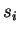
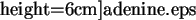
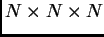

The calculation of the LDOS are accomplished by the options 11, 1 and 2 of the main menu of lev00 (the options 1 and 2 work only with CASTEP). If the corresponding files with weights (see Section 3.3) are found and read in successfully, you will be prompted to the same sort of menu as described above for the total DOS:
..............MENU DOS/LDOS .......................
..... Change these parameters if necessary:...
_____________> LDOS + total DOS <______________
0. THE CURRENT PICTURE IS: 1
1. Current LDOS task to be studied: ... undefined ...
2. Maximal energy step for the plotting: 0.10000
> Number of points for the DOS plot: 220
> Steps for each "physical" band:
0.10000 0.10000 0.10000
3. Smeared DOS/LDOS: ENABLED fast method
4. Broaden band boundaries by 1.500 dispersions
5. Dispersion for the smearing: 0.30000
6. For previewing: original DOS/LDOS
7. Number of plots in the group: ... undefined ...
8. Adopt present setting and calculate DOS/LDOS
11. Preview the current DOS/LDOS
12. PostScript file for the current DOS/LDOS
13. Upper limit to the energy-range of the plot: DISABLED
14. Quit: do not proceed.
---> Choose the item and press ENTER:
Options (0, 2-14) are exactly the same as in the previous Section 3.6.2.3. In particular, options 4, 5 and 6 are shown only if the smearing (option 3) is enabled.
The only new option that appear here is 1. This requires
some explanation. In the LDOS calculations you can specify several
spheres (or layers when option 2 of the main menu, Section
3.6.1 is chosen). In addition, there is also
a possibility to calculate  -,
-,  - and
- and  -projected LDOS for
every sphere as well as the total local DOS. For each such a case
we have a different factor
-projected LDOS for
every sphere as well as the total local DOS. For each such a case
we have a different factor

calculated either by lev1/lev2 (routines working with CASTEP, see Section 6) or by VASP.Every such type of the LDOS is referred to as a ``LDOS task'' and is to be considered separately. Tasks are numbered and you have to specify a task number using a table which appears as you choose the menu item, e.g.:
_____________> LDOS + total DOS <______________
0. THE CURRENT PICTURE IS: 1
1. Current LDOS task to be studied: ... undefined ...
2. Maximal energy step for the plotting: 0.10000
> Number of points for the DOS plot: 220
> Steps for each "physical" band:
0.10000 0.10000 0.10000
3. Smeared DOS/LDOS: ENABLED fast method
4. Broaden band boundaries by 1.500 dispersions
5. Dispersion for the smearing: 0.30000
6. For previewing: original DOS/LDOS
7. Number of plots in the group: ... undefined ...
8. Adopt present setting and calculate DOS/LDOS
11. Preview the current DOS/LDOS
12. PostScript file for the current DOS/LDOS
13. Upper limit to the energy-range of the plot: DISABLED
14. Quit: do not proceed.
---> Choose the item and press ENTER:
1
...... You have the following tasks: ......
1 task {t} with Radius= 1.00 and center in (0.000 0.000 0.000 ) from_vasp
2 task {s} with Radius= 1.00 and center in (0.000 0.000 0.000 ) from_vasp
3 task {p} with Radius= 1.00 and center in (0.000 0.000 0.000 ) from_vasp
4 task {d} with Radius= 1.00 and center in (0.000 0.000 0.000 ) from_vasp
5 task {t} with Radius= 1.00 and center in (2.100 2.100 2.100 ) from_vasp
6 task {s} with Radius= 1.00 and center in (2.100 2.100 2.100 ) from_vasp
7 task {p} with Radius= 1.00 and center in (2.100 2.100 2.100 ) from_vasp
8 task {d} with Radius= 1.00 and center in (2.100 2.100 2.100 ) from_vasp
Choose one between 1 and 8 :
In this table, some useful additional information is shown, e.g. radius
and position of the sphere and (in curly brackets) whether this is
a total local DOS ({t}) or the  -,
-,  -,
-,  -projections
({s}, {p}, {d}). This information
is provided to help you to choose the task correctly.
-projections
({s}, {p}, {d}). This information
is provided to help you to choose the task correctly.
Now, choose the LDOS task, e.g. number 4; the option 1 will then transform into:
1. Current LDOS task to be studied: 4
> Type of the LDOS: d
> Radius of the sphere: 1.000
> Center of the sphere: ( 0.000, 0.000, 0.000)
> Method of projection: from_vasp
The data files produced here (options 8 and 88, the latter one is on if the smearing is enabled) contain both the total DOS and LDOS columns. If the smearing is enabled, then the data files contain both smeared and raw total DOS and LDOS.
When previewed (option 11), both total and local/projected DOS for every curve in the group (from option 7) will be shown, as shown in Fig. 3.3.
|
 |
|
 |
Use option 13 to make the local/projected DOS visible since the total DOS usually appears too high on the graph.